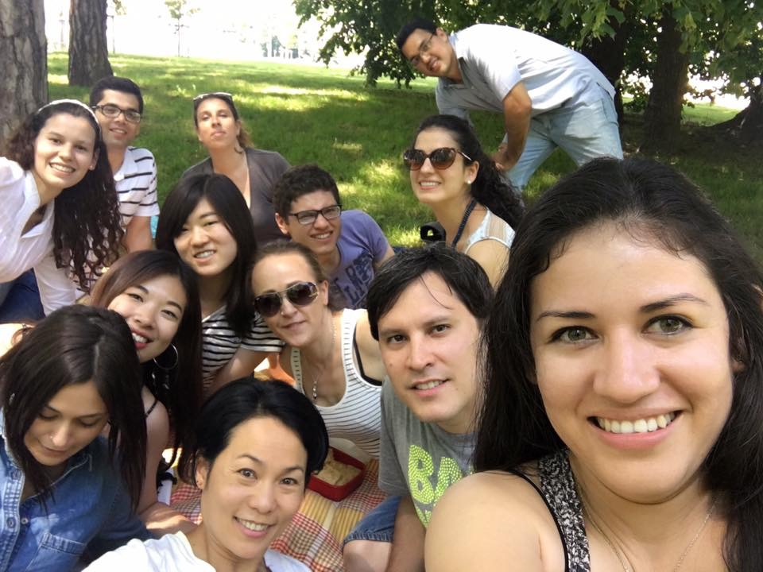

Meeting with the world in Besancon
I lived in Besancon, a small city of eastern France, over the summer of 2016. Satyed in a French host family, I expected my exchange life would basically revolving around speaking French, learning to appreciate different types of cheese and wines... Tres francais! And yes, I would say I had a great opportunity to practice my language skill while living a very French kinda life. For example, I didn't go to Starbucks for even once over the three months, and cafe I drank looks like the "real coffee" rather than those "bizzare beverages sold in Starbucks" as described by many French people.
I also eat exactly as the same as what French people eat. Baguette everyday accompanied by cheese and of course some desert after main course.
Right: Ordinary dinner prepared by my host-mom
Left: Lunch in cafeteria of University de Franche-Comte


However, besides for all those great chances for me to learn about French language and culture, what really enlights this whole study abroad experience is the chance to meeting the world, meeting the beauty of diversity! My classmates came from so many different countries including China, Japan, US, Spain, Portugal, Thailand, Switerland, Iran, Paraguay, Colombia, Turkey, Cyprus, Ghana, Syria, Yemen... I lose counting but you see what I mean. Different from meeting other international students in U.S., international students I meet in France is trying less to make them look and sound like local, rather, almost every one of them try to preserve their cultures and to share their unique cultures and stories in everyday life.
My Arabic friends introduce Ramadan to me as I saw them not eating during the day in June; I tasted the Yemani soup made by Yemani friends and they are good!! I had the chance to talk to several Syrians about their journeys fleeing to Europe and trying to have a new life, and learn about the country conditions in several low-income Latin American countries...
We always wonder the same questions, whether people who are different can live or work together. I guess I still don't have a very definite answer, but I would say, as long as you step out to interact with people who are different, you will be amazed to see how diverse and interesting is this world and getting to use empathy to see the differences on others. Copyright 2019 Guanrong Wang Thanks for


Thanks for my awesome friends and instructors for the greatest summer ever!